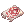

RO EP20 不死者
主線任務全流程攻略系統
📋 任務材料需求預備
| 圖示 | 材料名稱 | 數量 | 取得/用途 |
|---|---|---|---|
 |
蝴蝶翅膀 | 至少10個 | 用於快速回城 |
 |
蠕蟲變身卷軸 | 至少 3 個 | 進入蛇城區域對話必備 |
| 巨大的暗灰羽毛 | 20 個 | 四、鋼德家族任務 (法末修鋼德) | |
 |
可波的冠毛 | 30 個 | 四、鋼德家族任務 (霍希比剛得) |
 |
冰凍蟲殼 | 3 個 | 五、尾聲調查 (潛水白音) 備註: 可打怪同時再拾取 |
| 閃亮海帶莖 | 3 個 | 五、尾聲調查 (潛水白音) 備註: 可打怪同時再拾取 |
一、 任務啟動與初步調查
向左走到底與「Horuru」對話
地點：冰霜堡壘內部
與「Horuru」對話 (伊斯加爾特入口處)
地點：伊斯加爾特入口處
※ 埋蛤蜊任務沒解過的話需先跑：
向右走到底與「Leon」對話
地點：冰霜堡壘內部
回城與傳送至蛇巢
完成後，使用 蝴蝶翅膀 回城，接著使用 [集結] 傳送至蛇巢，點任意NPC(非蠕蟲變身狀態)傳出蛇巢。
蝴蝶翅膀 回城，接著使用 [集結] 傳送至蛇巢，點任意NPC(非蠕蟲變身狀態)傳出蛇巢。
與門口「Lehar」對話兩次
地點：古代冰風的峽谷東部 (觸發自動傳送)
與「Mariam」對話
地點：地圖右上角 (觸發自動傳送)
二、 堡壘周邊與探險副本
集結後進入冰霜堡壘與「Leon」對話
地點：冰霜堡壘內部
🎁 獎勵：「神聖貓咪鬍鬚」x20
往上走與「Horuru」對話
地點：冰霜堡壘內部。結束後使用 蝴蝶翅膀。
蝴蝶翅膀。
與旅館「Caruru」對話
地點：旅館內
藥水店與「Toruru」對話
藥水店：與「Toruru」對話後往下走出傳點。
與「Backstreet」對話並集結
地點：地圖右上方。完成後使用 [集結]。
分別與「Horuru」及「Velgund」對話
地點：冰霜堡壘內部。完成後使用 蝴蝶翅膀 及 [集結]。
蝴蝶翅膀 及 [集結]。🎁 獎勵：「神聖貓咪鬍鬚」x20
開啟副本「峽谷探索」
地點：冰霜堡壘門口。[建立單人組隊] 與「Lehar」對話。副本流程皆有引導。
副本結束後回組隊
副本結束後：[回到組隊] 並使用 [集結]。
與「Miriam」及「Lazy」對話
地點：冰霜堡壘內部。向右走到底與其對話，後使用 蝴蝶翅膀、[集結]、前往 [蛇巢]。
蝴蝶翅膀、[集結]、前往 [蛇巢]。🎁 獎勵：「神聖貓咪鬍鬚」x20
三、 蛇城根部與教團調查
※ 注意：進入蛇城區域後，與蠕蟲類 NPC 對話必須保持「蠕蟲變身」狀態。
蛇巢大門前對話傳送
地點：蛇巢大門前。[使用變身卷軸] 與「Lazy」及「Horuru」對話，傳送至「蛇城的根部一樓」。
擊殺任務：高級蠕蟲巫師與教團巫師
與「蠕蟲巫師」對話，擊殺 5 隻「高級蠕蟲巫師」後由左上方傳點前往二樓擊殺 5 隻「耶夢加得教團巫師」。
蛇城的根部二樓對話
往右上角觸發自動傳送，與「Lazy」、「Miriam」、「Horuru」對話完離開傳點、之後由左上方傳點前往「神聖的根部」。
與「Rgan」對話兩次
地點：神聖的根部。
收集 3 個「蛇莓果」
往下方傳點移動收集 3 個「蛇莓果」（小地圖有 + 號標示）後回報「Rgan」。
再次與「Rgan」對話
往上移動與「Rgan」對話。
四、 鋼德家族與根部區域任務
與「Rgan」對話領獎
地點：神聖的根部。
🎁 獎勵：「神聖貓咪鬍鬚」x20
完成 5 個鋼德家族任務
1. Gomiagand: 對話順序 [1, 1, 1, 1, 2, 2]
2. Pamosugand: 交付 20 個 巨大的暗灰羽毛
3. Nasioramigand: 進行對話
4. Holsivigand: 對話順序 [2, 1, 2, 1, 1, 1]，交付 30 個可波的冠毛
5. Eriligand: 對話兩次，第二次順序 [2, 3, 2]
2. Pamosugand: 交付 20 個 巨大的暗灰羽毛
3. Nasioramigand: 進行對話
4. Holsivigand: 對話順序 [2, 1, 2, 1, 1, 1]，交付 30 個
可波的冠毛5. Eriligand: 對話兩次，第二次順序 [2, 3, 2]
環境互動 (Tower & Puddle)
與「Tower」及「Puddle」對話（地圖上剩餘的 + 號）。
根部二樓互動
往下方傳點移動，分別與「Garbage Dumb」、「Storage」、「Mountain of Junk」對話（3 個黃色 + 號）。
與「Sarekgand」對話
地點：神聖的根部。
與「Inspector」對話開啟隱藏路徑
地點：神聖的根部。
擊殺任務：耶夢加得守衛
往上方傳點進入，擊殺「耶夢加得守衛」P 2 隻、Y 1 隻。完成後回報「Inspector」。
🎁 獎勵：「神聖貓咪鬍鬚」x10
迷宮進度與開啟副本
往上方傳點移動前往(小地圖剩餘+號)觸發傳送對話之後 [建立單人組隊] 開副本。
五、 多人副本與尾聲
副本「流兵地帶」
副本流程皆有引導則不加詳述。
副本出口對話與集結
與「Lehar」對話，往右側傳點移動，使用 [集結]。
🎁 獎勵：「神聖貓咪鬍鬚」x10
與「Lehar」再次對話
地點：冰霜堡壘內部。上樓梯向右走到底與其對話，完成後使用 蝴蝶翅膀。
蝴蝶翅膀。
與「Diver lwin」多次對話
地點：伊斯加爾特瀑布。出旅館後尋找「Diver lwin」。需求：交付 冰凍蟲殼 x3, 閃亮海帶莖 x3，並擊殺指定怪各 5 隻。
冰凍蟲殼 x3, 閃亮海帶莖 x3，並擊殺指定怪各 5 隻。
回報任務至瀑布
回到瀑布與「Diver lwin」對話，完成後再次重複此步驟。
後續調查與開啟副本
與「可路路」對話兩次，再與「雷文」及「雷拉爾」對話開啟副本「小小的小潮」。
副本「小小的小潮」流程
跟隨「雷拉爾」移動，並與「雷文」、「奧來利」對話。
副本結束擊殺指定怪
在該地圖擊殺 5 隻指定怪（分布於下方水域周邊），完成後回報任務。
前往迷宮 [需保持變身狀態]
由左下角傳點移動，與 NPC 對話。
迷宮調查 (5 個黃色 + 號)
傳出後對話與跟隨引導
依序與「白貓」、「雷茲」對話並跟隨引導。
前往蛇巢找到「樹根」
由上方門進入。
樹根調查 (3 個黃色 + 號)
出傳點後，與小地圖 3 個黃色 + 號對話完成指引。
前往神聖的根部最後標記點
最終對話：與「主教」對話
最終副本「被分離的聖地」
傳出後與「白貓」對話並跟隨引導，進入副本與「奧來利」對話，擊殺「拉斯甘德」後離開。
回報傳送
出副本與「奧來利」對話，自動傳回伊斯加爾特。
正式結束 EP20 主線
前往建築內與「博克林德」對話。
六、 墮落天使冰蛞蝓副本支線
與「Iwin Delivery」對話
跟隨導航即可。